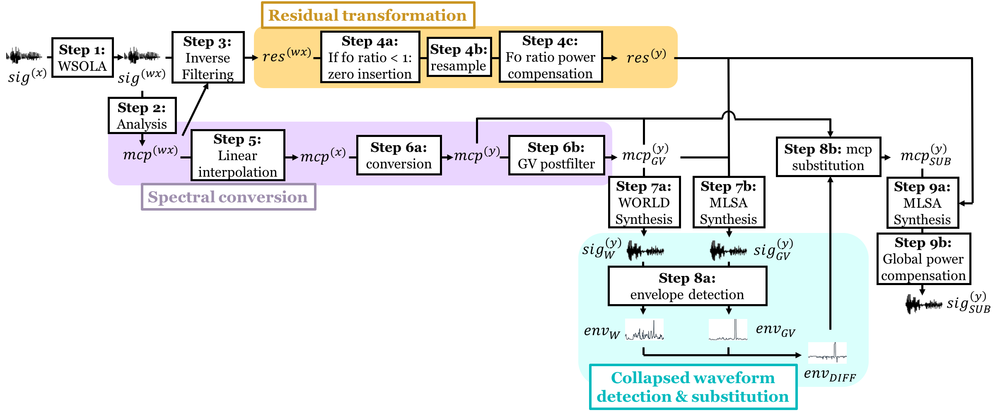

Generalization of Spectrum Differential based Direct Waveform Modification for Voice Conversion
Paper: to be uploaded
Authors: Wen-Chin Huang, Yi-Chiao Wu, Kazuhiro Kobayashi, Yu-Huai Peng, Hsin-Te Hwang, Patrick Lumban Tobing, Yu Tsao, Hsin-Min Wang and Tomoki Toda
Comments: Accepted to SSW10.
Abstract: We present a modification to the spectrum differential based direct waveform modification for voice
conversion (DIFFVC) so that it can be directly applied as a waveform generation module to voice conversion models. The
recently proposed DIFFVC avoids the use of a vocoder, meanwhile preserves rich spectral details hence capable of generating
high quality converted voice. To apply the DIFFVC framework, a model that can estimate the spectral differential from the F0
transformed input speech needs to be trained beforehand. This requirement imposes several constraints, including a limitation
on the estimation model to parallel training and the need of extra training on each conversion pair, which makes DIFFVC
inflexible. Based on the above motivations, we propose a new DIFFVC framework based on an F0 transformation in the residual
domain. By performing inverse filtering on the input signal followed by synthesis filtering on the F0 transformed residual
signal using the converted spectral features directly, the spectral conversion model dose not need to be retrained or capable
of predicting the spectral differential. We describe several details that need to be taken care of under this modification,
and by applying our proposed method to a non-parallel, variational autoencoder (VAE)-based spectral conversion model, we
demonstrate that this framework can be generalized to any spectral conversion model, and experimental evaluations show that
it can outperform a baseline framework whose waveform generation process is carried out by a vocoder.
Proposed framework

Speech Samples
We evaluated our proposed framework on the Voice Conversion Challenge 2018 (VCC 2018) dataset.
[Paper][Datasets]
Specifically, we evaluted on the SPOKE task, which was a non-parallel VC task.